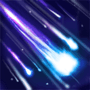
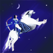

技能介绍
- 群星风暴

群星风暴
召唤一波流星砸向附近的敌方单位。作用范围内最近的敌方单位将会再受到一次75%伤害的冲击。可用神杖升级。
群星风暴不会被林肯法球抵挡。
群星风暴不能伤害隐身单位。
如果原本要打击的目标死亡，群星风暴的第二次星落会重新选择一个目标。 - 月神之箭
月神之箭
射出一支绝对精准的箭矢，对第一个击中的敌人造成伤害并眩晕目标。目标距离越远，眩晕时间越长，最短0.01秒，最长可达5.0秒。根据箭矢飞行的距离还将对目标额外造成最多140点伤害。若击中的是非远古的非英雄单位，将直接秒杀。
神箭每飞行150码，中箭后眩晕的持续时间将提高0.5秒，额外伤害增加14点。
月神之箭可以射中隐身单位。 - 跳跃

跳跃
米拉娜的坐骑向前跳跃加入战斗，着地时发出一声凶狠的咆哮鼓舞友方单位，提升攻击和移动速度。速度加成持续10秒。
可以使用跳跃躲避攻击和技能弹道。
- 月之暗面
月之暗面
让米拉娜和所有己方英雄进入隐身状态。只要还在月光阴影的持续时间内，即使隐身被打破也会在短时间内重新淡入隐身。
受到作用的单位会自动停止攻击敌人。
技能免疫状态下的队友也会受到作用。